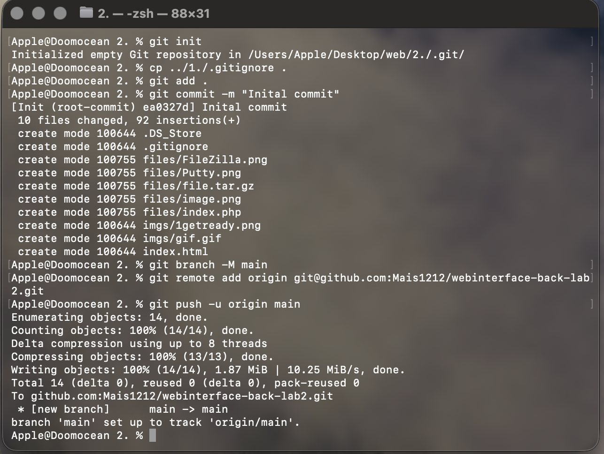
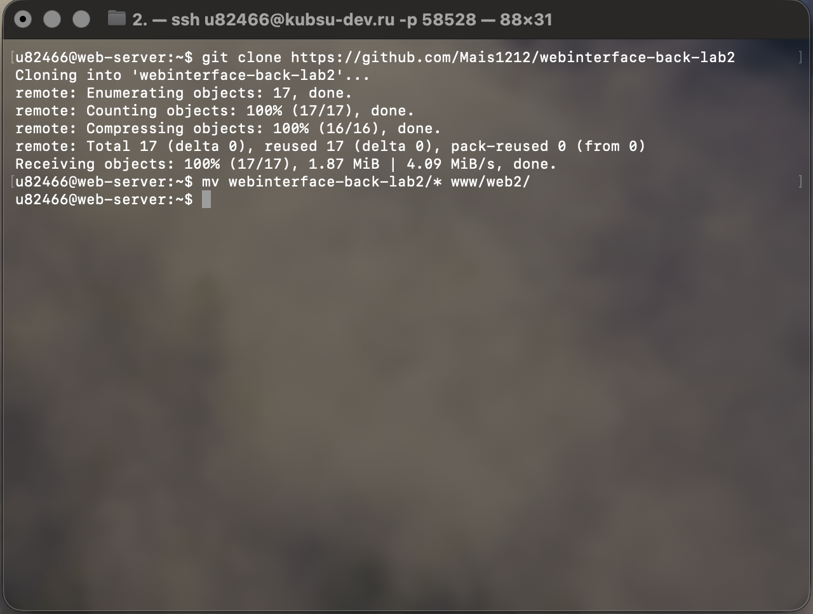
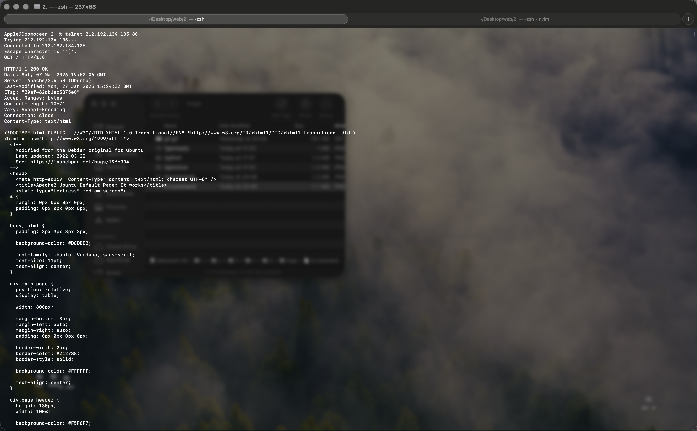
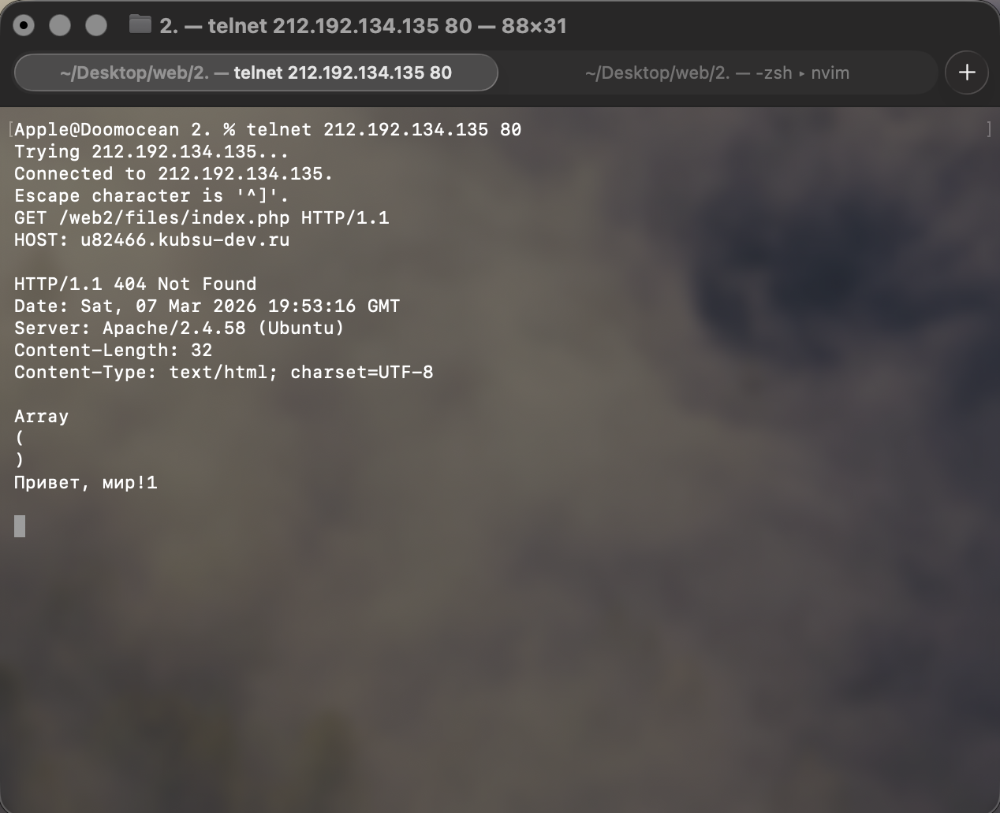
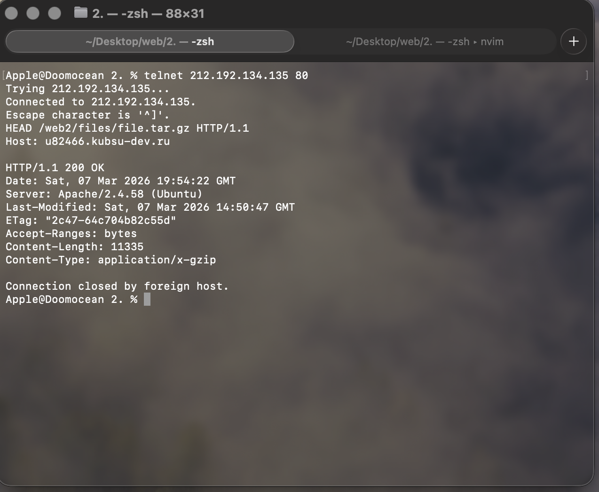
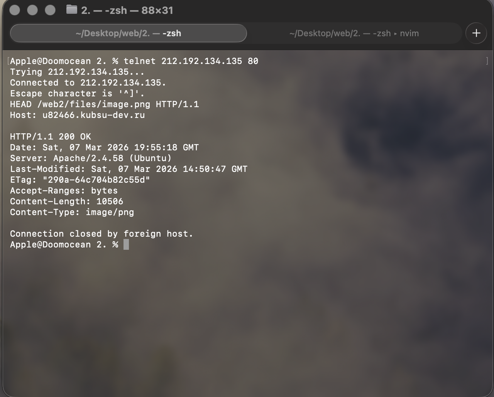
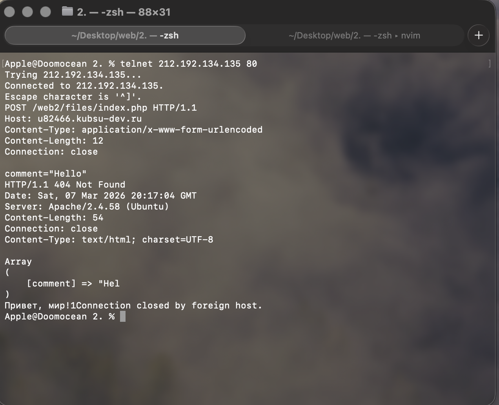
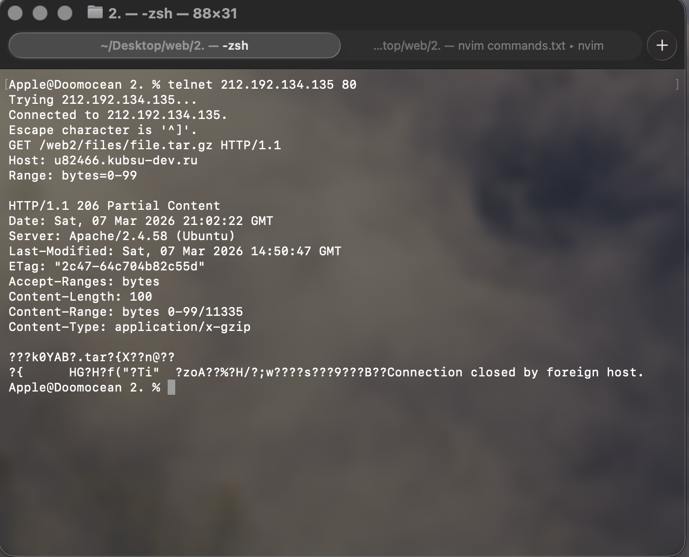
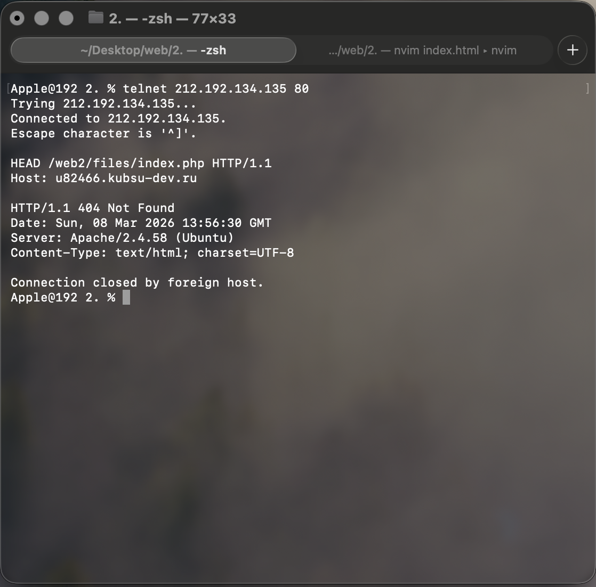
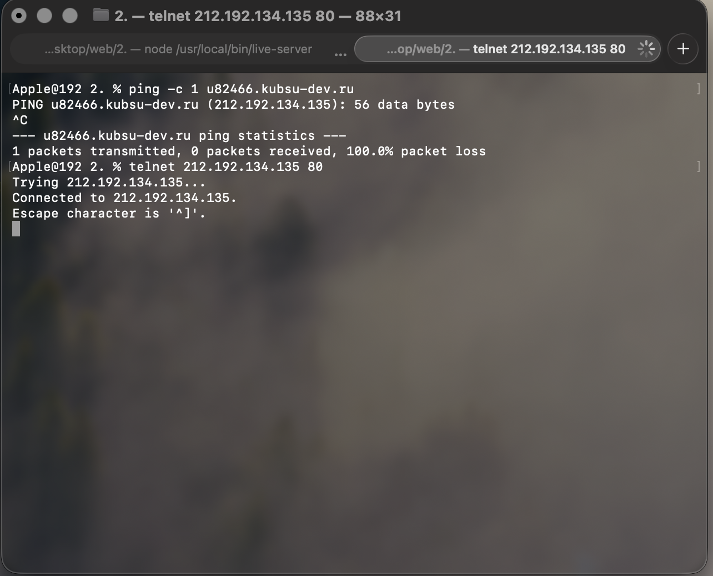

Подготовка.
1.Залить файлы в каталоге files на веб-сервер через GIT. Проверить загрузку
файлов в браузере из вашего учебного домена. Проверить работоспособность
index.php.
Перед началой работы положим директорию fiels в директорию, которая в дальнейшем будет опубликована на гитхаб, где также будет лежать сайт. Убедимся введя команду:
ls . ./files
Теперь создадим новый репозиторий в этой директории последовательно введя команды:
git init
git add .
git commit -m "Inital commit"
git branch -M main
git remote add origin git...
git push -u origin main

Теперь подключимся к удалённому серверу и загрузим опубликованный на github репозиторий с помощью команд:
git clone http...
mkdir www/web2/
mv webinterface-back-lab2/* www/web2/

Теперь подготовим текст для дальнейшего удобного копирования в утилиту telnet:
GET / HTTP/1.0
GET /web2/files/index.php HTTP/1.1
HOST: u82466.kubsu-dev.ru
HEAD /web2/files/file.tar.gz HTTP/1.1
Host: u82466.kubsu-dev.ru
HEAD /web2/files/image.png HTTP/1.1
Host: u82466.kubsu-dev.ru
POST /web2/files/index.php HTTP/1.1
Host: u82466.kubsu-dev.ru
Content-Type: application/x-www-form-urlencoded
Content-Length: 12
Connection: close
comment="Hello"
GET /web2/files/file.tar.gz HTTP/1.1
Host: u82466.kubsu-dev.ru
Range: bytes=0-99
HEAD /web2/files/index.php HTTP/1.1
Host: u82466.kubsu-dev.ru
Теперь нужно узнать ip-адресс для kubsu-dev.ru с помощью команды ping, после чего его можно будет использовать в качестве парамметра для утилиты telnet:

В дальнейшем все комманды будут вводится в утилиту telnet.
Утилита
telnet — это сетевой инструмент, реализующий одноименный протокол для взаимодействия с удаленными узлами через командную строку
Пункт 1. Получить главную страницу методом GET в протоколе HTTP/1.0

Что делает: Запрос корневой директории сайта по протоколу HTTP/1.0. Сервер возвращает содержимое, которое в данном случае является стандартной страницей Apache (так как в корне нет индексного файла).
Пункт 2. Получить внутреннюю страницу методом GET в протоколе HTTP/1.1

Что делает: Запрашивает файл index.php из каталога /hw2/. Скрипт специально настроен так, что возвращает статус 404, но при этом выполняет код и генерирует тело ответа.
Пункт 3. Определить размер файла file.tar.gz, не скачивая его

Что делает: Метод HEAD возвращает только заголовки, без тела. Позволяет узнать размер файла из поля Content-Length.
Пункт 4. Определить медиатип ресурса /image.png

Что делает: Аналогично пункту 3, определяем MIME-тип изображения.
Пункт 5. Отправить комментарий на сервер по адресу /index.php (POST)

Что делает: Запрос корневой директории сайта по протоколу HTTP/1.0. Сервер возвращает содержимое, которое в данном случае является стандартной страницей Apache (так как в корне нет индексного файла).
Пункт 6. Получить первые 100 байт файла /file.tar.gz

Что делает: Запрос корневой директории сайта по протоколу HTTP/1.0. Сервер возвращает содержимое, которое в данном случае является стандартной страницей Apache (так как в корне нет индексного файла).
Пункт 7. Определить кодировку ресурса /index.php

Что делает: Запрос HEAD для получения только заголовков. Позволяет узнать кодировку из поля Content-Type.
Обновление репозитория

